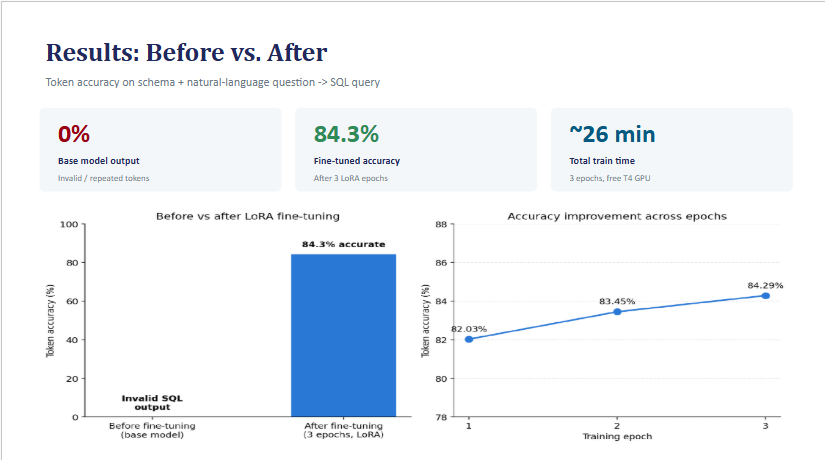
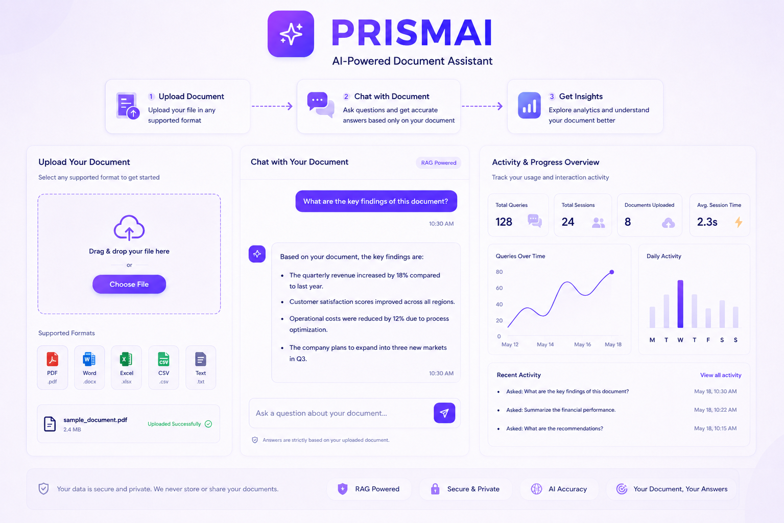

My Projects
A collection of AI, Machine Learning, Deep Learning, and Generative AI projects demonstrating my expertise in building intelligent systems, fine-tuning Large Language Models, Retrieval-Augmented Generation (RAG), data analysis, and AI-powered applications.

Efficient LLM Fine-Tuning using LoRA & QLoRA (TinyLlama-1.1B-Chat)
Fine-tuned the TinyLlama-1.1B-Chat LLM for Text-to-SQL generation using PEFT techniques, including LoRA and QLoRA. Trained on approximately 3,000 high-quality SQL examples from the Hugging Face b-mc2/sql-create-context dataset using Google Colab NVIDIA T4 GPU. The model completed 3 training epochs, achieving 84.2% validation accuracy while significantly reducing GPU memory consumption and training costs through 4-bit quantization, low-rank adaptation, and efficient PEFT techniques.

PrismAI – AI Document Intelligence Platform
Developed a production-ready AI document assistant that enables users to upload PDFs, DOCX, CSV, XLSX, and TXT files, ask natural language questions, and receive context-aware answers using Retrieval-Augmented Generation (RAG). Built with FastAPI, Next.js, OpenAI Embeddings, Supabase, and Qdrant Vector Database, delivering intelligent semantic search with an intuitive user experience.

AI Customer Support Agent
Built an LLM-powered customer support agent that plugs directly into a live Shopify store, answering order, shipping, and product questions in real time without human intervention. The agent uses prompt engineering and structured API integrations to pull live store data — order status, inventory, policies — and ground its responses in accurate, up-to-date information rather than guesswork. Designed around a FastAPI backend for fast request handling, the system reduced manual response time and gave the store a 24/7 first line of support, freeing the team to focus on complex, high-value customer issues instead of repetitive queries.

Clinical Data Visualization & Predictive Analysis
Conducted comprehensive Exploratory Data Analysis (EDA) on clinical datasets to uncover trends in patient demographics and disease prevalence. Built interactive visualizations and trained machine learning models to support data-driven healthcare decision-making.

AI PDF Question Answering Assistant
Built an intelligent document question-answering application that enables users to upload PDF documents and receive instant, context-aware answers through natural language interaction, transforming static documents into searchable knowledge bases.
Health Tips Chatbot
Developed an AI-powered healthcare assistant capable of providing personalized wellness recommendations through natural conversations. The chatbot delivers lifestyle guidance, nutrition suggestions, and general health insights using Large Language Models and modern web technologies.